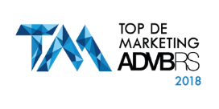

A formação vai te preparar para fazer o planejamento e pela execução dos processos de manutenção de computadores e pela operação de redes locais de computadores. Além de, desenvolver aplicativos computacionais, adotando normas técnicas, de qualidade, de saúde, de segurança do trabalho e preservação ambiental no desempenho de sua função.
Por meio de uma proposta pedagógica adequada às exigências do mundo profissional, o curso oferece nos momentos presenciais* uma aprendizagem pautada por metodologias que propiciam atuação por projetos, aulas práticas, teóricas, vivenciais e flexíveis com foco no mercado de trabalho. Mas também, momentos mediados por tecnologia**, em uma plataforma educacional própria, com conteúdos produzidos por tutores altamente qualificados. Ambos os modos estimulam você a experimentar habilidades necessárias para os profissionais do futuro.
Acompanhe a distribuição da carga-horária do currículo:
Total de horas do curso: 1.200h
- Momentos presenciais*: 996h
- Momentos mediados por tecnologias com tutoria ativa**: 204h (no formato EAD - Educação a Distância)
Ao final da formação você estará apto a atuar em empresas de diversos segmentos, além de poder participar de concursos em organizações públicas.
Gostou da ideia de ser um profissional completo da área de Informática? Venha para o curso Técnico em Informática e mude de vida.
Turmas Disponíveis |
||||
Turno |
Período de Matrículas |
Início |
Período do Curso |
Dias e Horário do Curso |
Manhã |
02/10/2023 até 11/03/2024 |
11/03/2024 |
11/03/2024 até 11/12/2025 |
de segunda a Sexta das 9:15 às 12:15 |
Tarde |
de segunda a Sexta das 19:00 às 22:00 |
|||
Mais informações pelo (51)3288-7750 ou pelo whatsapp 51993159728 |
||||
